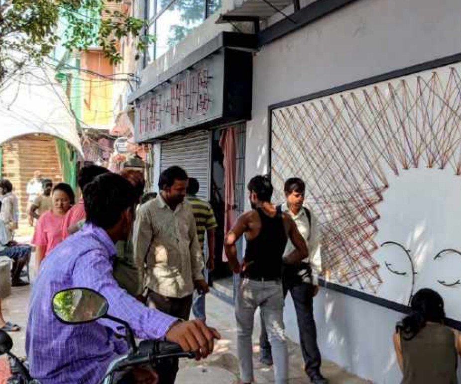

A commissioned art installation for a women's hostel wall at Majnu Ka Tila, Delhi — a woman's face strung from wire and thread, evoking a message of women's empowerment. The frame and face were built from upcycled and salvaged materials found on site.
